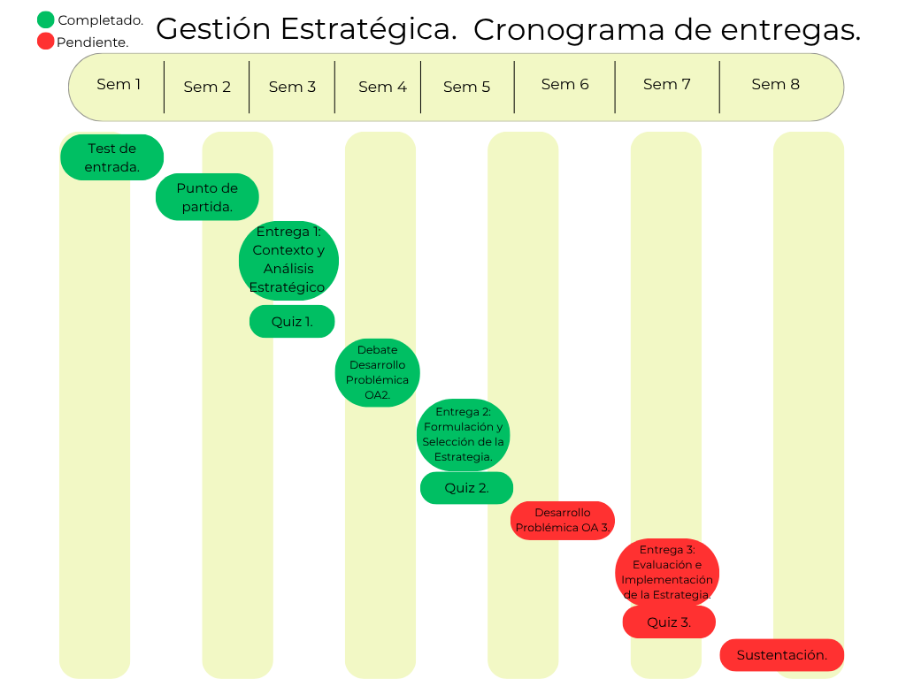

Cronograma del proceso y fase de evaluación e implementación de la estrategia.

Figura 1. Elaboración propia. (2026)
El contenido de la evaluación e implementación de la estrategia se construye a partir de la Formulación y Selección de la Estrategia y será publicado con las próximas entregas del proyecto consultor.